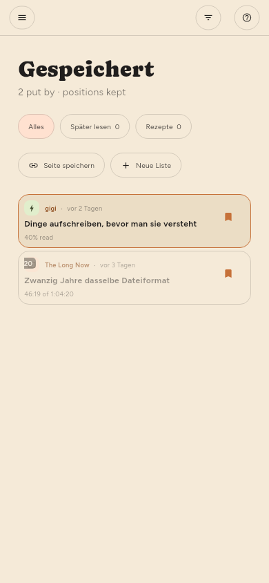

← Dinge finden · Inhalt · Quellen verwalten →
Dinge aufbewahren
Speichern im Leser, oder s in der Liste. Gespeicherte Artikel sind von allem ausgenommen, was Platz freiräumt.
Listen (nur Premium)
Gespeichert ist eine Liste, und Sie können so viele weitere anlegen, wie Sie möchten — nach Thema, nach dem, was Sie damit vorhaben, ganz wie Sie ablegen. Sie stehen links im Regal unter Listen, mit der Anzahl ihres Inhalts neben dem Namen.

| Um | Tun Sie |
|---|---|
| Eine anzulegen | + an der Überschrift „Listen“ oder Neue Liste im Speichern-Menü |
| Etwas darauf zu legen | Speichern legt in der Liste ab, die im Regal ausgefüllt ist |
| Eine andere Liste zu wählen | Das ▾ neben Speichern, ein Rechtsklick oder langes Drücken |
| Es wieder herunterzunehmen | Erneut Speichern, auf der Liste, in der es liegt |
| Eine umzubenennen oder zu entfernen | Ihr Zahnrad im Regal, wie bei einem Feed |
Speichern geht in die zuletzt gewählte Liste. Wer eine Liste aus dem Menü wählt, legt den Artikel ab und macht diese Liste zu der, die einfaches Speichern von da an nutzt — das Regal zeigt sie mit ausgefülltem Lesezeichen. Bis Sie etwas anderes wählen, ist das Gespeichert, und genau das hat Speichern schon immer bedeutet.
Ein Artikel kann auf mehreren Listen zugleich stehen, und wer ihn von einer nimmt, lässt die anderen in Ruhe. Gespeichert selbst lässt sich weder umbenennen noch entfernen: Einfaches Speichern braucht ein Ziel, und auf dieses eine sind sich alle Geräte einig.
Wenn Sie eine Liste entfernen, bleiben ihre Artikel erhalten, solange ein Feed oder eine andere Liste sie noch hält — dieselbe Regel wie beim Entfernen eines Feeds. Das Entfernen einer Quelle lässt gespeicherte Artikel in Ruhe und notiert, woher sie kamen, bevor die Quelle verschwindet.
Listen reisen mit ihren Artikeln zwischen Ihren Geräten.